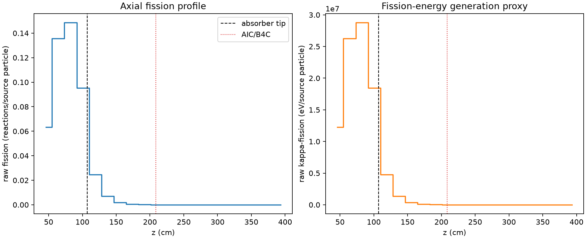
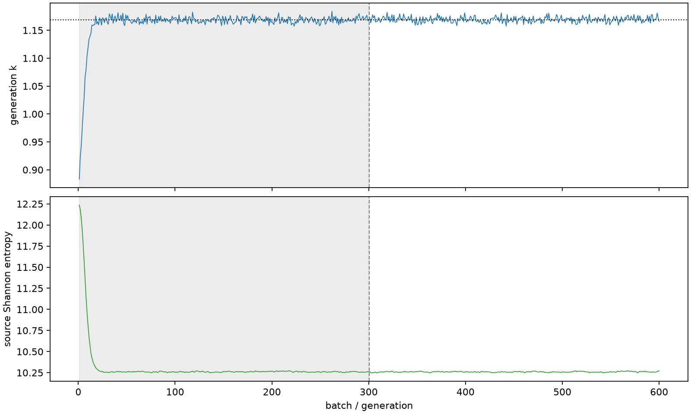

| field | value |
|---|---|
| experiment | V2-STAGE_128_OGRENCI_03-0012 |
| k | 1.168903833202846 |
| MC standard error | 0.0002048628786016503 |
| seconds | 903.0631717069991 |
| acceptance | not_assessed |
| convergence | review_required |
Completed is output integrity only; physical and statistical review required. Zero tallies do not prove zero production or zero uncertainty.
| diagnostic | value |
|---|---|
| geometric fuel voxels | 5280 |
| zero fission tally voxels | 1821 |
| low signal fuel voxels | 2886 |
| low signal fission share | 0.00011077271369632805 |
| low signal kappa share | 0.00011080829766158123 |
| important fission share | 0.9500344044505424 |
| previous filter included | 2394 |
| duration estimate s | 1562.5173488400023 |
| actual minus estimate s | -659.4541771330032 |
| fission relative MC error | statistics |
|---|---|
| all_geometric_fuel | {"voxels": 5280, "positive_mean_voxels": 3459, "zero_mean_voxels": 1821, "undefined_relative_error_voxels": 1821, "median": 0.03892110759944885, "p95": 0.9424125652049661, "maximum": 1.0000000000000002} |
| low_signal | {"voxels": 2886, "positive_mean_voxels": 1065, "zero_mean_voxels": 1821, "undefined_relative_error_voxels": 1821, "median": 0.5683004648093289, "p95": 1.0, "maximum": 1.0000000000000002} |
| important_95pct | {"voxels": 1155, "positive_mean_voxels": 1155, "zero_mean_voxels": 0, "undefined_relative_error_voxels": 0, "median": 0.005530818583799529, "p95": 0.010749672547115967, "maximum": 0.012385416551823925} |
| outside_previous_filter | {"voxels": 2886, "positive_mean_voxels": 1065, "zero_mean_voxels": 1821, "undefined_relative_error_voxels": 1821, "median": 0.5683004648093289, "p95": 1.0, "maximum": 1.0000000000000002} |
| kappa_fission relative MC error | statistics |
|---|---|
| all_geometric_fuel | {"voxels": 5280, "positive_mean_voxels": 3459, "zero_mean_voxels": 1821, "undefined_relative_error_voxels": 1821, "median": 0.038859203652934514, "p95": 0.9416991612979617, "maximum": 1.0000000000000002} |
| low_signal | {"voxels": 2886, "positive_mean_voxels": 1065, "zero_mean_voxels": 1821, "undefined_relative_error_voxels": 1821, "median": 0.5675506792597098, "p95": 1.0, "maximum": 1.0000000000000002} |
| important_95pct | {"voxels": 1155, "positive_mean_voxels": 1155, "zero_mean_voxels": 0, "undefined_relative_error_voxels": 0, "median": 0.005524323910538952, "p95": 0.010735869873387616, "maximum": 0.012369511144093907} |
| outside_previous_filter | {"voxels": 2886, "positive_mean_voxels": 1065, "zero_mean_voxels": 1821, "undefined_relative_error_voxels": 1821, "median": 0.5675506792597098, "p95": 1.0, "maximum": 1.0000000000000002} |
| axial bin | fission share | kappa-fission share |
|---|---|---|
| 1 | 0.13284628396479947 | 0.1328477234860703 |
| 2 | 0.2843936659418475 | 0.2843845515988118 |
| 3 | 0.31112460768477884 | 0.3111142525590045 |
| 4 | 0.1996664018489203 | 0.19966523201207884 |
| 5 | 0.051643972378890256 | 0.051657429669966 |
| 6 | 0.014542028999568647 | 0.014546056056412413 |
| 7 | 0.004140527598714987 | 0.004141741587846156 |
| 8 | 0.0011891295593605751 | 0.0011895054281321265 |
| 9 | 0.0003365341285017689 | 0.00033662049704896317 |
| 10 | 9.0443552723692e-05 | 9.047372593268667e-05 |
| 11 | 2.0021590253848504e-05 | 2.00293124139823e-05 |
| 12 | 4.985618866916703e-06 | 4.98704007952339e-06 |
| 13 | 1.2739579465324256e-06 | 1.273983564710749e-06 |
| 14 | 1.2180496104616768e-07 | 1.2167341261752777e-07 |
| 15 | 1.3698656314795698e-09 | 1.3692253056410794e-09 |
| 16 | 0.0 | 0.0 |
| 17 | 0.0 | 0.0 |
| 18 | 0.0 | 0.0 |
| 19 | 0.0 | 0.0 |
| 20 | 0.0 | 0.0 |
Histories include the inactive-to-active transition at batch 300. kappa-fission approximates fission energy production, not total heat deposition.

